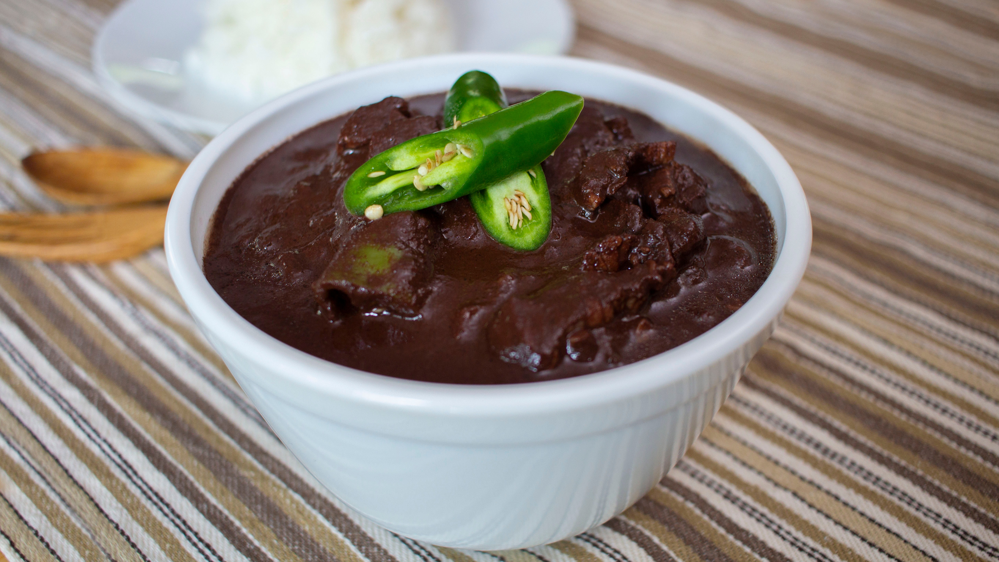

Home
Pork Blood Stew

Pork blood stew, known as Dinuguan in Filipino, is a rich, savory dish featuring diced pork, pork blood, and a
blend of spices. This traditional meal offers bold flavors and a hearty texture, making it a satisfying main
course alongside steamed rice or a tasty midday treat paired with puto.
Ingredients
- 10 ounces pork blood
- 1 cup vinegar
- 1 tablespoon canola oil
- 1 onion, peeled and chopped
- 4 cloves garlic, peeled and minced
- 1 thumb-size ginger (about 1 tablespoon), peeled and minced
- 2 pounds pork belly, cut into ½-inch strips
- 1 tablespoon fish sauce
- 1 cup water
- 1 tablespoon brown sugar
- 2 finger chilies (siling haba)
- salt and pepper to taste
Instructions
- In a bowl, combine pig's blood and about 2 tablespoons of the vinegar. Stir well.
- In a pot over medium heat, heat oil. Add onions, garlic, and ginger and cook until softened.
- Add pork and cook, stirring occasionally, until lightly browned.
- Add fish sauce and cook for about 1 to 2 minutes.
- Add vinegar and bring to a boil. Cook, uncovered and without stirring, for about 3 to 5 minutes or until
slightly reduced.
- Add water and bring to a boil. Lower heat, cover, and continue to cook for about 15 to 20 minutes or
until
meat is tender.
- Add pork blood, stirring to disperse and prevent lumps.
- Add brown sugar and stir to dissolve.
- Add chili peppers.
- Continue to simmer for about 10 minutes or until sauce is thickened.
- Season with salt and pepper to taste. Serve hot with rice or puto.